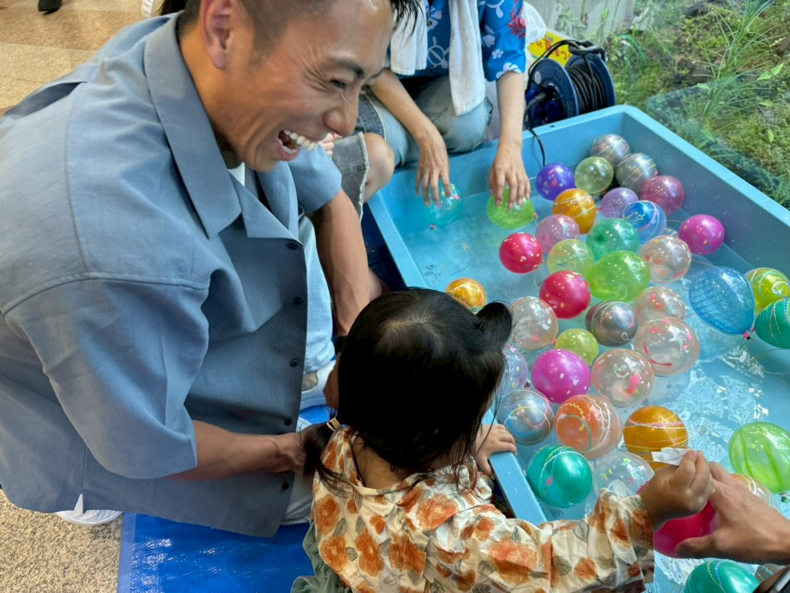
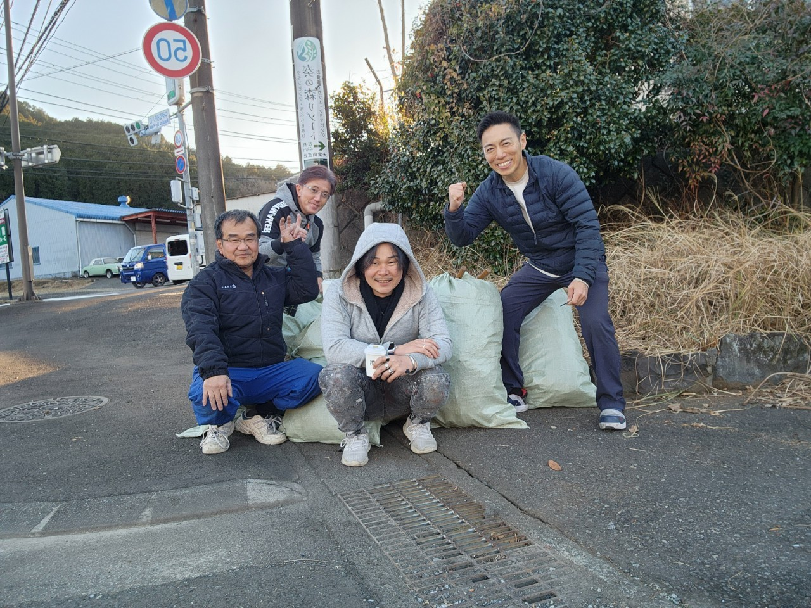
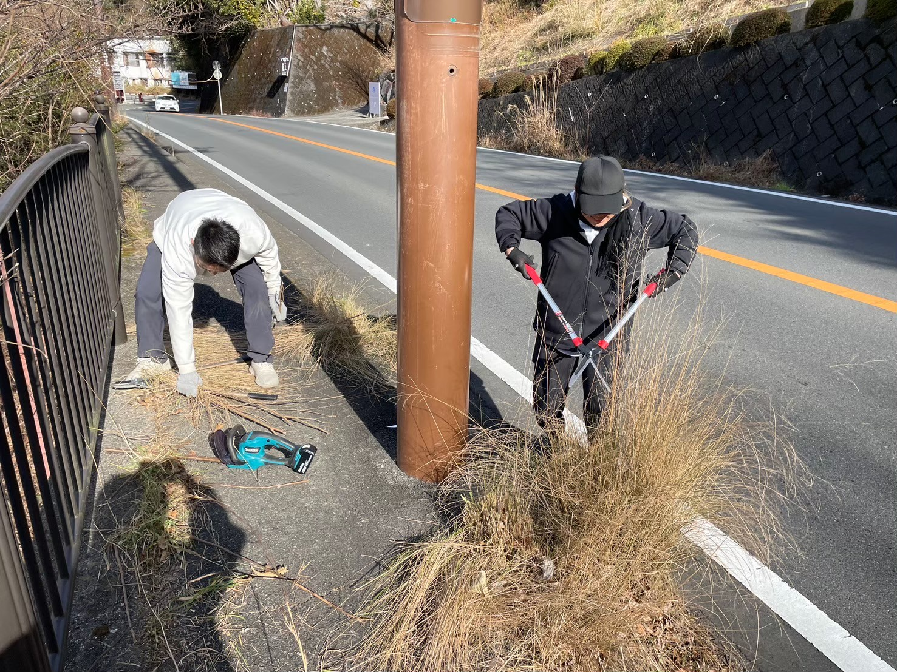

子どもファーストの
まちへ
伊東市が守るべきは、今を生きる子どもたちと、これから生まれてくる命。彼らの命と未来を最優先に考えることが、持続可能なまちづくりの第一歩です。

最新の活動はInstagramで発信中
Message
Policy
問い続けます。子どもたちの未来、守れていますか？
この先も、夢を描けるまちですか？ 伊東の魅力、本当に届いていますか？
伊東市が守るべきは、今を生きる子どもたちと、これから生まれてくる命。彼らの命と未来を最優先に考えることが、持続可能なまちづくりの第一歩です。
広大な公共資産の維持費が市民の負担となる今、求められるのは「拡張か、最適化か」の選択。限られた資源を本当に必要な場所へ。優先順位を明確にし、責任ある判断を進めます。

「訪れたい」だけでなく「暮らしたい」と思われるまちへ。交通・景観・情報発信を強化し、経済の再生と市民の誇りにつなげます。

Profile
大竹 圭 おおたけ けい
Contact / SNS
日々の活動・議会報告はSNSで発信しています。ご意見・ご相談もお気軽にどうぞ。